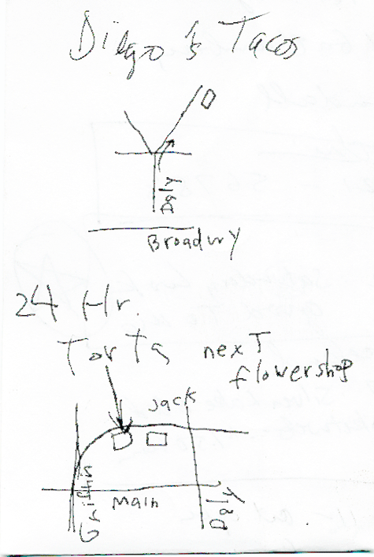

|
Late Night and 24-Hour Food Places
I have had one too many trips to Jack and the Box this past month. I need better food. My only criterion for this list is that it is within a 5-10 minute drive from my house. I am sure there are plenty of places which are open late further away from me (such as the mythical 24 hour Starbucks in Northridge and Long Beach). Here's my list: Donuts Yum-Yum Donuts (24-hour) somewhere by Nightingale MS Tacos (and sometimes Burritos) El Gran Burrito (24-hour) on the southwest corner of Santa Monica and Vermont Carnitas Michoacan (24-hour) corner of Broadway and Ave 19 two 24-hour Lincoln Heights joints  Chinese Thai Ruen Pair Korean Hodori (24-hour) Olympic and Vermont? Burgers Farmer Brothers (24-hour) Alameda and Seventh Diners Denny's (24-hour) The Original Pantry Cafe (24-hour) Figueroa and Ninth TV Land Cafe (24-hour) Alameda and Olympic Fred 62 (24-hour) Vermont, in Los Feliz Piper's (24-hour) Vermont, in Koreatown |
Home viha@thecultureindex.com |